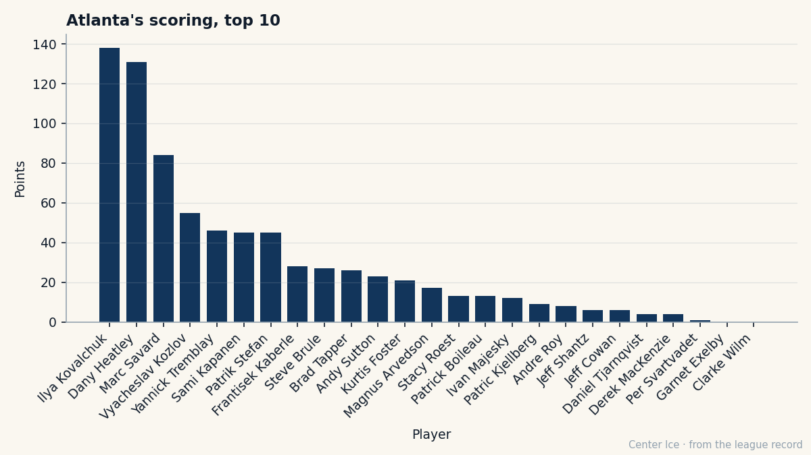

128 Points, $2.60M, and the Cheapest Payroll in Hockey: Todd Bertuzzi at 30
He scored 128 points for $2.60M on a team that spends less than anyone else. One year left. The man who nearly re-entered the draft at midnight is the best player on the cheapest roster the league has.
 Carol BinghamFeatures writer · Rinkside
Carol BinghamFeatures writer · Rinkside Todd Bertuzzi91 is 30 years old. He scored 56 goals and 128 points this season on a team that spent $35.16M to dress him. The
Todd Bertuzzi91 is 30 years old. He scored 56 goals and 128 points this season on a team that spent $35.16M to dress him. The  Vancouver Canucks Canucks' payroll is the lowest in the league. Their cost per point, $0.36M, is the lowest too. And the man at the top of that roster, 93 overall, $2.60M, one year left on the deal, has a deking rating of 99.
Vancouver Canucks Canucks' payroll is the lowest in the league. Their cost per point, $0.36M, is the lowest too. And the man at the top of that roster, 93 overall, $2.60M, one year left on the deal, has a deking rating of 99.
99 deking. At 6-foot-2, 225 pounds. At 30, in his tenth NHL season. Bertuzzi is the highest-rated man on Vancouver's roster;  Markus Naslund89 sits below him at 89. The two of them, Naslund at $4.40M and Bertuzzi at $2.60M, scored 138 and 128 points.
Markus Naslund89 sits below him at 89. The two of them, Naslund at $4.40M and Bertuzzi at $2.60M, scored 138 and 128 points.

Free agency is 60 days away (2005-07-28). The question the Canucks will face is whether they can carry more payroll to keep a 30-year-old winger who just scored a career high. Their revenue is $83.38M. Their profit was $40.84M. The building seats 14,832 and the ticket is $80. Whether Vancouver uses that room is the story.
The Road Out of Sudbury
Bertuzzi was born in 1975 in Sudbury, Ontario, and played his minor hockey there. The Guelph Storm took him fifth overall in the 1991 OHL Priority Selection. Marc Crawford, then general manager of the Cornwall Royals, passed on him. Crawford has said since that Bertuzzi was "a big kid who hadn't grown into his body yet" and had "maturity issues."
He scored 21 points in 42 games as a 16-year-old in 1991-92, then 58 in 60 the next year. The New York Islanders took him 23rd overall in the 1993 draft. In August 1993, before the season, he had surgery for chipped bones in his left elbow. He missed training camp, went back to Guelph, and scored 82 points in 61 games. The following year, 1994-95, he scored 54 goals for the Storm, a team record that stood over Mike Prokopec's mark from the prior season.
The Midnight Deadline
The contract that followed is the one people remember from the Bertuzzi origin story, and it was not a Vancouver contract. With Bertuzzi eligible to re-enter the NHL draft if the Islanders did not sign him by July 7, 1995, general manager Don Maloney told the world he would use the second overall pick in that June's draft to select Bertuzzi again. The night of July 7, minutes before midnight, Pat Morris, Bertuzzi's agent, closed a four-year, $4.6 million deal. Morris had reportedly wanted terms similar to Brett Lindros' five-year, $6.7 million contract from the prior summer.
A kid from Sudbury who scored 54 goals in the OHL nearly went back into the draft because his club wouldn't agree to a number. He debuted on October 7, 1995, scored against the Boston Bruins, and finished with 39 points in 76 games. The second year, 23 points in 64 games. The numbers came down.
The Ten-Year Path to 128
Bertuzzi arrived in Vancouver at some point in the years between those slow Islanders seasons and the record opening on December 1, 2004, when he was already there. The record does not cover the move. What it does show: 63 games and 101 points last season at a 131 pace, then 82 games and 128 points this season. A career high in assists (72), a career high in games played, and a playoff run that saw him log 24.2 minutes a night over 6 games against  Edmonton Oilers.
Edmonton Oilers.
The Canucks lost to the fifth-seeded Oilers in the first round, 4-2. Bertuzzi had 11 points in those 6 games. The loss was the team's, not his. The season was his: 56 goals, 72 assists, 96 penalty minutes, 21.1 minutes a night.
His book grades tell you what the $2.60M buys: 99 deking, 97 puckhandling, 96 passing, 94 accuracy, 94 balance, 94 heroics. The lowest grade on his sheet is 50, for injury resistance. He played 82 games this year after 63 last year, which is not a guarantee of anything.
What the Room Looks Like Behind Him
The roster under Bertuzzi is thin at the top.  Trevor Linden82, 74 points in 65 games, is 35.
Trevor Linden82, 74 points in 65 games, is 35.  Brendan Morrison81 scored 56 in 82 games. Two 24-year-old Swedish twins at center, Henrik and Daniel Sedin, put up 21 and 56 respectively. The Sedins are supposed to be the future, but the future scored 21 points at one and 56 at the other for a first-round exit.
Brendan Morrison81 scored 56 in 82 games. Two 24-year-old Swedish twins at center, Henrik and Daniel Sedin, put up 21 and 56 respectively. The Sedins are supposed to be the future, but the future scored 21 points at one and 56 at the other for a first-round exit.
Bertuzzi will be 31 at the start of next season. The question is whether Vancouver pays him at the rate he just scored at or loses him. A 93-overall, 56-goal right wing who can play 24 minutes and carries a 99-deking rating does not come cheap in free agency. But at $35.16M, the Canucks have more room than anyone.
The 2004-05 season was the year we found out what Todd Bertuzzi is.